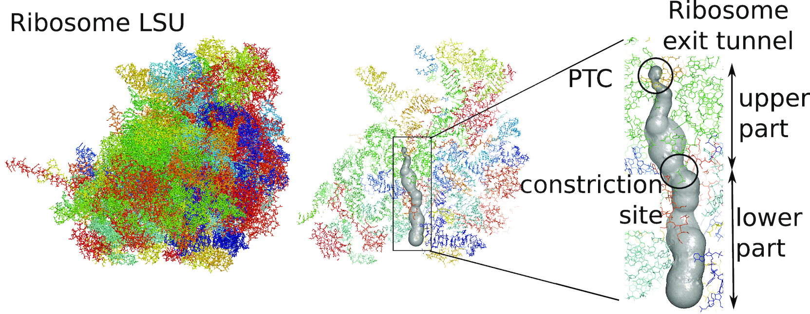
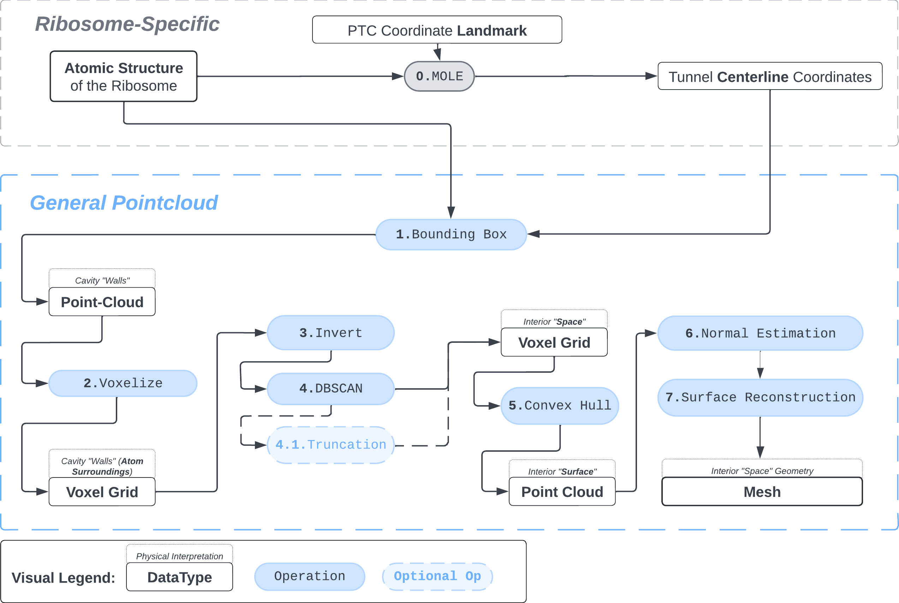

def atompos_to_voxelized_sphere(center: np.ndarray, radius: int):
"""Make sure radius reflects the size of the underlying voxel grid"""
x0, y0, z0 = center
#!------ Generate indices of a voxel cube of side 2r around the centerpoint
x_range = slice(
int(np.floor(x0 - radius)),
int(np.ceil(x0 + radius)))
y_range = slice(
int(np.floor(y0 - radius)),
int(np.ceil(y0 + radius)))
z_range = slice(
int(np.floor(z0 - radius)),
int(np.ceil(z0 + radius)))
indices = np.indices(
(
x_range.stop - x_range.start,
y_range.stop - y_range.start,
z_range.stop - z_range.start,
)
)
indices += np.array([x_range.start,
y_range.start,
z_range.start])[:, np.newaxis, np.newaxis, np.newaxis ]
indices = indices.transpose(1, 2, 3, 0)
indices_list = list(map(tuple, indices.reshape(-1, 3)))
#!------ Generate indices of a voxel cube of side 2r+2 around the centerpoint
sphere_active_ix = []
for ind in indices_list:
x_ = ind[0]
y_ = ind[1]
z_ = ind[2]
if (x_ - x0) ** 2 + (y_ - y0) ** 2 + (z_ - z0) ** 2 <= radius**2:
sphere_active_ix.append([x_, y_, z_])
return np.array(sphere_active_ix)Summary and Background
We present a protocol to extract the surface of a biomolecular cavity for shape analysis and molecular simulations.
We apply and illustrate the protocol on the ribosome structure, which contains a subcompartment known as the ribosome exit tunnel or “nascent polypeptide exit tunnel” (NPET). More details on the tunnel features and biological importance can be found in our previous works1,2.
The protocol was designed to refine the output obtained from MOLE software3, but can be applied to reconstruct a mesh on any general point cloud. Hence, we take the point-cloud of atom positions surrounding the tunnel as a point of departure.

Schematic representation of the protocol

1. Pointcloud Preparation: Bounding Box and Voxelization
Bbox: There are many ways to extract a point cloud from a larger biological structure – in this case we settle for a bounding box that bounds the space between the PTC and the NPET vestibule.
# "bounding_box_atoms.npy" is a N,3 array of atom coordinates
atom_centers = np.load("bounding_box_atoms.npy") Sphering: To make the representation of atoms slightly more physically-plausible we replace each atom-center coordinate with positions of voxels that fall within a sphere of radius \(R\) around the atom’s position. This is meant to represent the atom’s van der Waals radius.
One could model different types of atoms (\(N\),\(C\),\(O\),\(H\) etc.) with separate radii, but taking \(R=2\) proves a good enough compromise. The units are Angstrom and correspond to the coordinate system in which the structure of the ribosome is recorded.
voxel_spheres = np.array([ atompos_to_voxel_sphere(atom, 2) for atom in atom_centers ])Voxelization & Inversion: Since we are interested in the “empty space” between the atoms, we need a way to capture it. To make this possible we discretize the space by projecting the (sphered) point cloud into a voxel grid and invert the grid.
# the grid is a binary 3D-array
# with 1s where a normalized 3D-coordinate of an atom corresponds to the cell index and 0s elsewhere
# by "normalized" i mean that the atom coordinates are
# temporarily moved to the origin to decrease the size of the grid (see `index_grid` method further).
initial_grid, grid_dims, _ = index_grid(voxel_spheres)
# The grid is inverted by changing 0->1 and 1->0
# Now the atom locations are the null voxels and the empty space is active voxels
inverted_grid = np.asarray(np.where(initial_grid != 1)).TCompare the following representation (Inverted Point Cloud) to the first point cloud: notice that where there previously was an active voxel is now an empty voxel and vice versa. The tubular constellation of active voxels in the center of the bounding box on this inverted grid is the tunnel “space” we are interested in.


2. Subcloud Extraction
Clustering: Having obtained a voxelized representation of the interatomic spaces inside and around the NPET our task is now to extract only the space that corresponds to the NPET. We use DBSCAN.
scikit’s implementation of DBSCAN conveniently lets us retrieve the points from the largest cluster only, which corresponds to the active voxels of NPET space (if we eyeballed our DBSCAN parameters well).
from scikit.cluster import DBSCAN
_u_EPSILON, _u_MIN_SAMPLES, _u_METRIC = 5.5, 600, 'euclidian'
_, clusters_container = DBSCAN_capture(inverted_grid, _u_EPSILON, _u_MIN_SAMPLES, _u_METRIC )
largest_cluster = DBSCAN_pick_largest_cluster(clusters_container)
DBSCAN Parameters and grid size.
Our 1Å-side grid just happens to be granular enough to accomodate a “correct” separation of clusters for some empirically established values of min_nbrs and epsilon (DBSCAN parameters), where the largest cluster captures the tunnel space.
A possible issue here is “extraneous” clusters merging into the cluster of interest and thereby corrupting its shape. In general this occurs when there are clusters of density that are close enough (within epsilon to the main one to warrant a merge) and simultaneously large enough that they fulfill the min_nbrs parameter. Hence it might be challenging to find the combination of min_nbrs and epsilon that is sensitive enough to capture the main cluster completely and yet discriminating enough to not subsume any adjacent clusters.
In theory, a finer voxel grid (finer – in relationship to the initial coordinates of the general point cloud; sub-angstrom in our case) would make finding the combination of parameters specific to the dataset easier: given that the atom-sphere would be represented by a proprotionally larger number of voxels, the euclidian distance calculation between two voxels would be less sensitive to the change in epsilon.
Partioning the voxel grid further would come at a cost:
- you would need to rewrite the sphering method for atoms (to account for the the new voxel-size)
- the computational cost will increase dramatically, the dataset could conceivably stop fitting into memory alltogether.

Subcloud refinement
I found that this first pass of DBSCAN (eps=\(5.5\), min_nbrs=\(600\)) successfully identifies the largest cluster with the tunnel but generally happens to be conservative in the amount of points that are merged into it. That is, there are still redundant points in this cluster that would make the eventual surface reconstruction spatially overlap with the rRNA and protiens. To “sharpen” this cluster we apply DBSCAN only to its sub-pointcloud and push the eps distance down to \(3\) and min_nbrs to \(123\) (again, “empirically established” values), which happens to be about the lowest parameter values at which any clusters form. This sharpened cluster is what the tesselation (surface reconstruction) will be performed on.


3. Tessellation
ptcloud_convex_hull_points
Surface points can be extracted by creating an alpha shape over the point cloud and taking only the points that belong to the alpha surface.
import pyvista as pv
import open3d as o3d
import numpy as np
def ptcloud_convex_hull_points(pointcloud: np.ndarray, ALPHA:float, TOLERANCE:float) -> np.ndarray:
assert pointcloud is not None
cloud = pv.PolyData(pointcloud)
grid = cloud.delaunay_3d(alpha=ALPHA, tol=TOLERANCE, offset=2, progress_bar=True)
convex_hull = grid.extract_surface().cast_to_pointset()
return convex_hull.pointsOne could content themselves with the alpha shape representation of the NPET geometry and stop here, but it’s easy to notice that the vertice of the polygon (red dots) are distributed unevenly over the surface. This is likely to introduce artifacts and instabilities into further simulations.


estimate_normals
Normal estimation is done via rolling a tangent plane over the surface points.
import pyvista as pv
import open3d as o3d
import numpy as np
def estimate_normals(convex_hull_surface_pts: np.ndarray, kdtree_radius=None, kdtree_max_nn=None, correction_tangent_planes_n=None):
pcd = o3d.geometry.PointCloud()
pcd.points = o3d.utility.Vector3dVector(convex_hull_surface_pts)
pcd.estimate_normals(search_param=o3d.geometry.KDTreeSearchParamHybrid(radius=kdtree_radius, max_nn=kdtree_max_nn) )
pcd.orient_normals_consistent_tangent_plane(k=correction_tangent_planes_n)
return pcd
apply_poisson_recon
The source is available at https://github.com/mkazhdan/PoissonRecon. For programmability we connect the binary to the pipeline by wrapping it in a python subprocess but one can of course use the binary directly.
The output of the binary is a binary .ply (Stanford Triangle Format) file. For purposes of distribution we also produce an asciii-encoded version of this .ply file side-by-side: some geometry packages are only able to parse the ascii version.
def apply_poisson_reconstruction(surf_estimated_ptcloud_path: str, recon_depth:int=6, recon_pt_weight:int=3):
import plyfile
# The documentation can be found at https://www.cs.jhu.edu/~misha/Code/PoissonRecon/Version16.04/ in "PoissonRecon" binary
command = [
POISSON_RECON_BIN,
"--in",
surf_estimated_ptcloud_path,
"--out",
output_path,
"--depth",
str(recon_depth),
"--pointWeight",
str(recon_pt_weight),
"--threads 8"
]
process = subprocess.run(command, capture_output=True, text=True)
if process.returncode == 0:
print(">>PoissonRecon executed successfully.")
print(">>Wrote {}".format(output_path))
# Convert the plyfile to asciii
data = plyfile.PlyData.read(output_path)
data.text = True
ascii_duplicate =output_path.split(".")[0] + "_ascii.ply"
data.write(ascii_duplicate)
print(">>Wrote {}".format(ascii_duplicate))
else:
print(">>Error:", process.stderr)
Now, having refined the largest DBSCAN cluster, we have a pointcloud which faithfully represent the tunnel geometry. To create a watertight mesh from this point cloud we need to prepare the dataset:
- retrieve only the “surface” points from the pointcloud
- estimate normals on the surface points (establish data orientation)
d3d_alpha, d3d_tol = 2, 1
surface_pts = ptcloud_convex_hull_points(coordinates_in_the_original_frame, d3d_alpha,d3d_tol)
pointcloud = estimate_normals(surface_pts, kdtree_radius=10, kdtree_max_nn=15, correction_tangent_planes_n=10)The dataset is now ready for surface reconstruction. We reach for Poisson surface reconstruction4 by Kazhdan and Hoppe, a de facto standard in the field.
PR_depth , PR_ptweight = 6, 3
apply_poisson_recon(pointcloud, recon_depth=PR_depth, recon_pt_weight=PR_ptweight)Result
What you are left with is a smooth polygonal mesh in the .ply format. Below is the illustration of the fidelity of the representation. Folds and depressions can clearly be seen engendered by three proteins surrounding parts of the tunnel (uL22 yellow, uL4 light blue and eL39 magenta). rRNA is not shown.6

References
1.
Dao Duc, K. & Song, Y. S. The impact of ribosomal interference, codon usage, and exit tunnel interactions on translation elongation rate variation. PLoS genetics 14, e1007166 (2018).
2.
Dao Duc, K., Batra, S. S., Bhattacharya, N., Cate, J. H. & Song, Y. S. Differences in the path to exit the ribosome across the three domains of life. Nucleic acids research 47, 4198–4210 (2019).
3.
Sehnal, D. et al. MOLE 2.0: Advanced approach for analysis of biomacromolecular channels. Journal of cheminformatics 5, 1–13 (2013).
4.
Kazhdan, M., Bolitho, M. & Hoppe, H. Poisson surface reconstruction. in Proceedings of the fourth eurographics symposium on geometry processing vol. 7 (2006).
5.
Zhou, Q.-Y., Park, J. & Koltun, V. Open3D: A modern library for 3D data processing. arXiv preprint arXiv:1801.09847 (2018).
6.
Sullivan, C. & Kaszynski, A. PyVista: 3D plotting and mesh analysis through a streamlined interface for the visualization toolkit (VTK). Journal of Open Source Software 4, 1450 (2019).